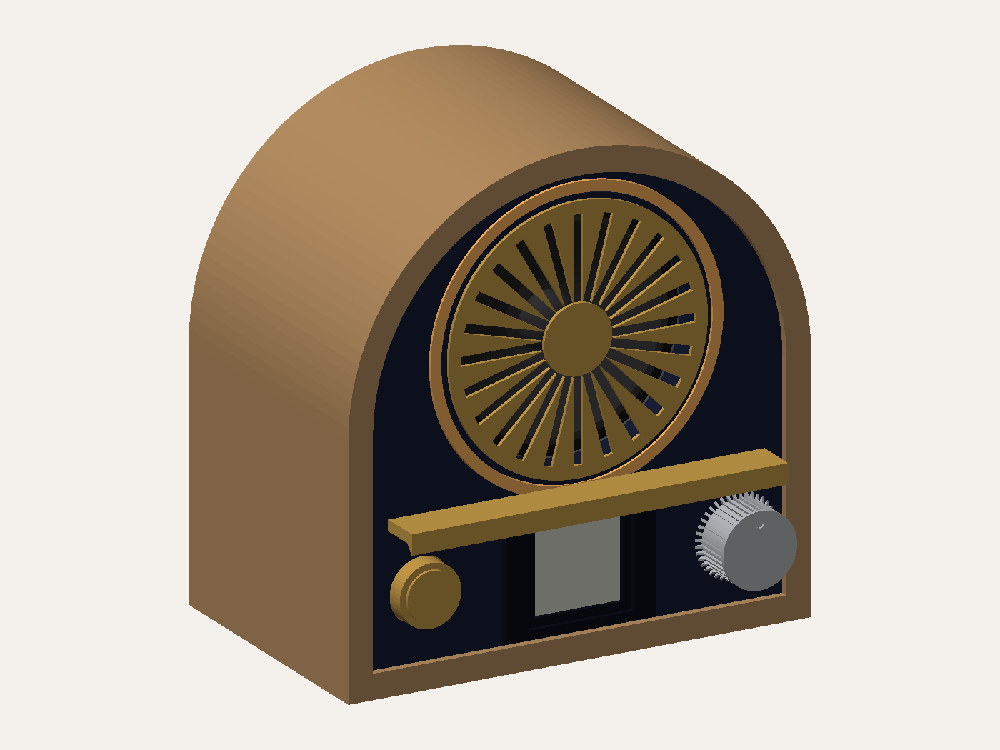
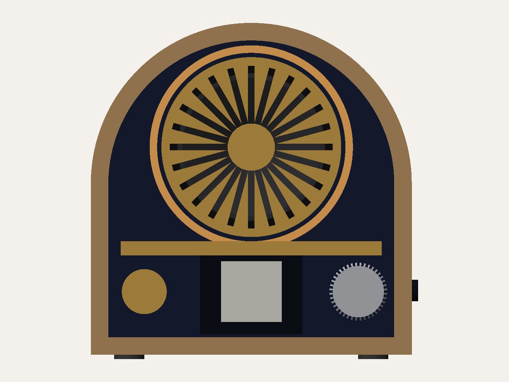
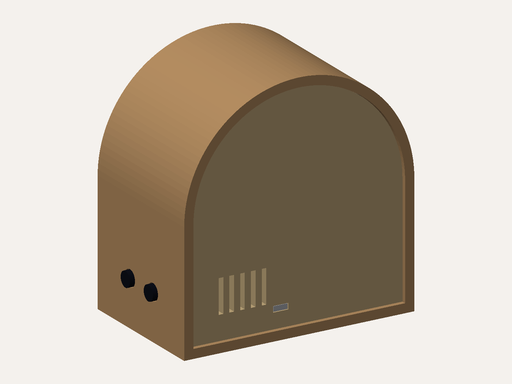
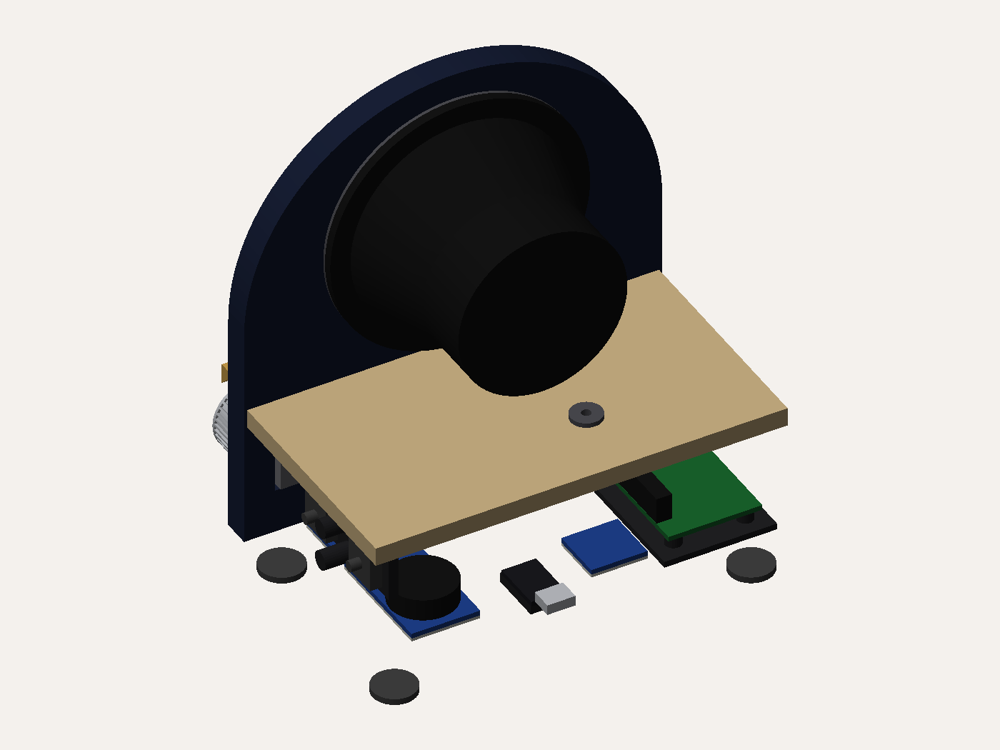
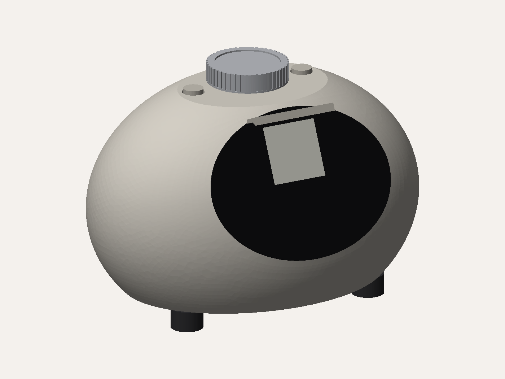
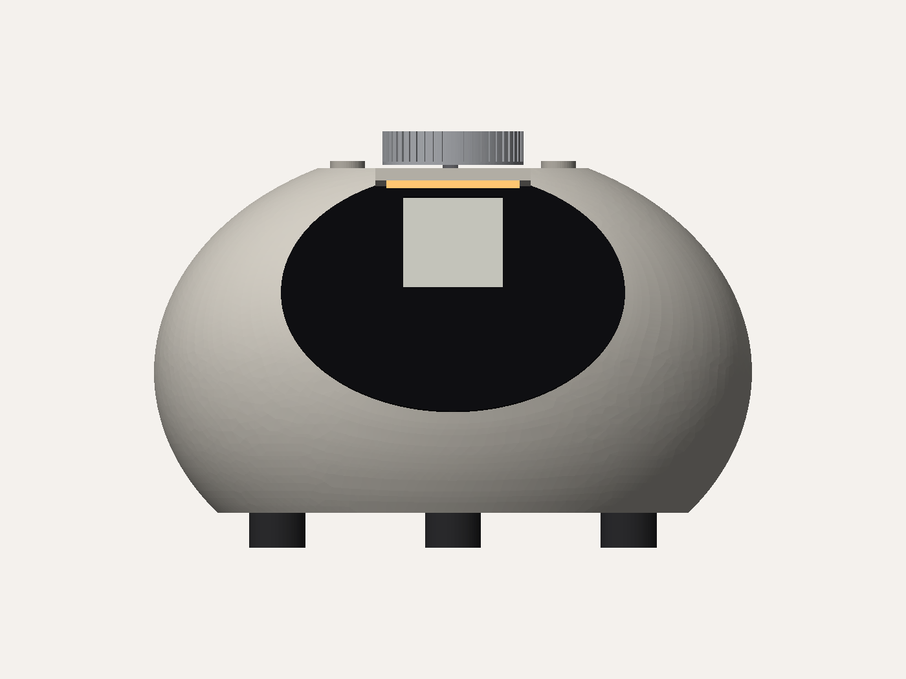
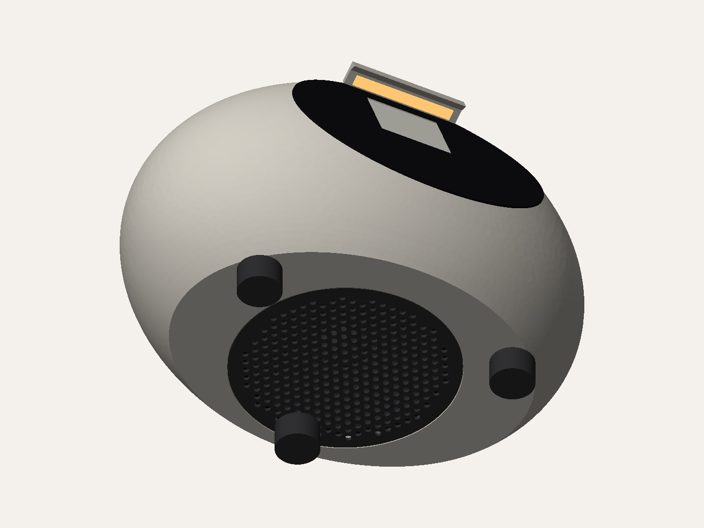
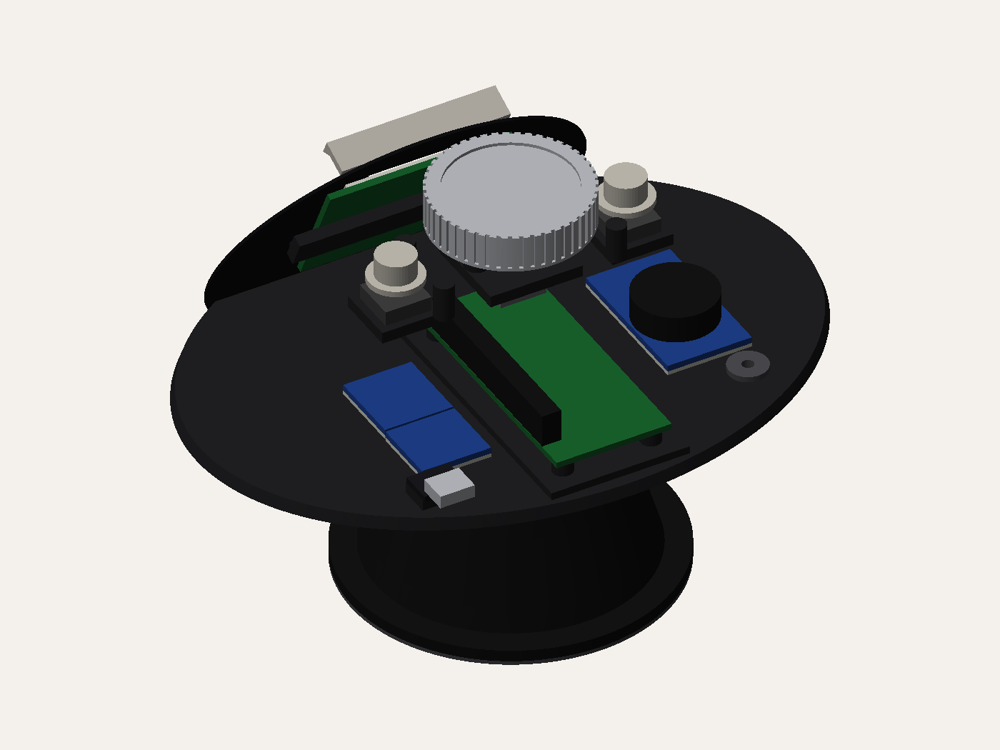

Two full alternatives to V1, modelled in FreeCAD with the same bought parts inside: PC83-4 speaker, 1.54" e-ink, encoder, Pi Zero 2 W. Both are checked for part collisions and give their speaker a sealed chamber of measured volume. They are design studies. Neither has had V1's printability pass yet, which would come after choosing one.
| V1 · Dial | Sunrise | Pebble | |
|---|---|---|---|
| Size (w × h × d) | 180 × 120 × 100mm | 150 × 155 × 94mm | 170 × 108 × 129mm |
| Speaker chamber | 0.64L · Qtc 1.04 | 0.63L · Qtc 1.04 | 0.69L · Qtc 1.00 |
| Sound | Forward | Forward | Down, spreading all round |
| Controls | Knob front; 3 buttons on top | Snooze + knob front; menu, dismiss on side | Rotating top puck (press = snooze); 2 top buttons |
| Light | Hood over display | Hood + sunrise halo wake-up light | Slim eyebrow over display |
| Made from | Mitred hardwood + printed parts | Arched shell: printed, or laminated timber | Printed shell, optionally fabric-wrapped |




The one moment this device exists for is waking up, so the whole front is a sunrise. The speaker grille is the sun, its radial slots are the rays, and a warm translucent halo rings it. A brass horizon bar crosses the full width, and the sun sits just behind it.
The halo is functional as well: it's a wake-up light. It can fade up over ten minutes before the radio starts, like the sunrise-alarm lamps sold for exactly this, and double as a night light. The horizon bar is also the hood lighting the display beneath it. Under the horizon sit snooze on the left, the display in the middle and the knob on the right. Menu and dismiss move to the side face, where a half-asleep hand won't find them by accident.




Built like a modern smart speaker. The speaker fires down into a 10mm gap under the body, as a HomePod mini does, so sound spreads evenly round the room and no grille breaks the surface. The front is a flat facet tilted 25° back, finished as a black glass face, with the e-ink display angled up toward you in bed and a slim light eyebrow above it.
The top carries a rotating aluminium puck. Turn it for volume or station, press it to select, and while the alarm is ringing, pressing it snoozes, so the easiest thing to slap is the right thing. Menu and dismiss are the two small buttons beside it.
Models: cad/alternatives/sunrise.py and pebble.py, which share the component models in common.py. Run either inside FreeCAD to rebuild it. Renders are generated from those models, not drawn.